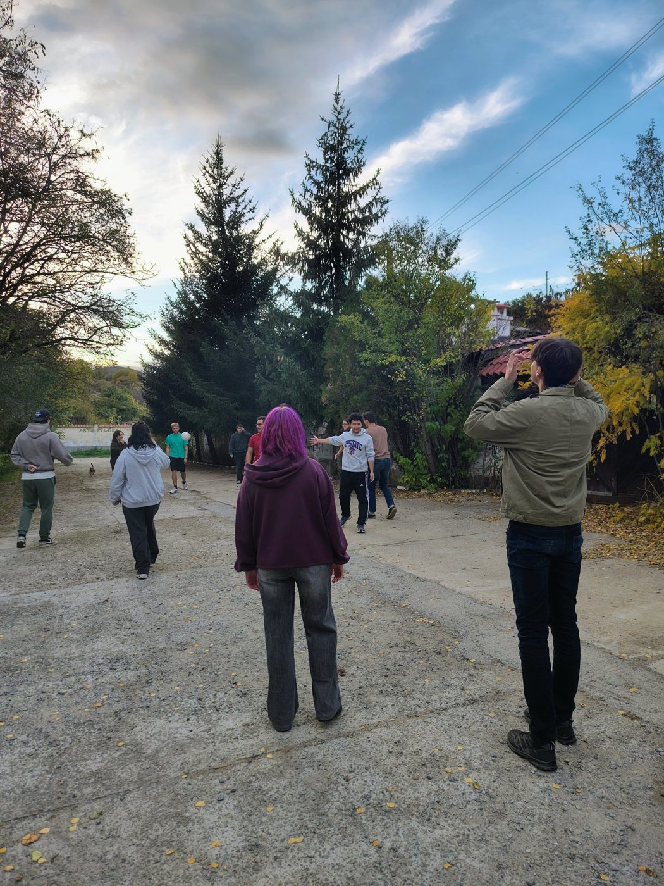

"Green Facilitator" was an Erasmus+ training course that brought youth workers and young people from Poland, Bulgaria, Romania, Turkey, Spain and Hungary to Youtopia Centre, a nature-based venue in the forests of Sarnena Gora just outside Stara Zagora, to learn how to run environmental workshops that really reach young people. Instead of lecturing about catastrophes, participants learned to work with eco-anxiety and climate apathy, to use participatory methods where every voice is heard, and to turn concern for the planet into hope, creativity and practical action. Much of the programme took place outdoors, in nature.
The course opened on 26 October with teambuilding, icebreakers and conversations in pairs and small groups. In a big circle, everyone shared what had brought them there, along with their expectations, fears and motivations, before the team introduced the goal of the week: giving youth workers the tools to run environmental workshops that inspire young people and turn eco-anxiety and apathy into action.
Day two began with a blind walk. In pairs, one blindfolded and one guiding, participants explored the nature around the venue through sound, touch and smell, discovering how much we miss when we only look. The group then cleaned up the forest and the nearby village and turned what they collected, from old tyres and plastic bottles to a broken lamp and a lot of duct tape, into junk art and sculptures. One piece carried the message "Contemporary art be like: sometimes junk is just junk", a reminder that every piece of waste ends up somewhere.

On day three, participants stepped into the facilitator role and designed their own environmental workshops: setting goals, choosing methods and planning how to reach young people in a fun, active and meaningful way. They then ran their first tests with the group, many of them outdoors in the courtyard, the village streets and on nature trails, followed by honest peer feedback and improvements. These workshops will be collected into a guidebook for youth workers.


Day four was a cultural day to rest and recharge, with visits to Stara Zagora and Plovdiv, two of Bulgaria's oldest cities.
Day five, "Every Voice Counts", was dedicated to Liberating Structures: simple group formats that make sure everyone is heard, not just the loudest. In 1-2-4-All, participants moved from silent thinking to pairs, fours and the whole group to answer: "If you were 10 times bolder, what environmental action would you do with young people this year?" In 25/10 Crowd Sourcing, they wrote, swapped and anonymously rated ideas for a nearly zero-waste Erasmus+ project. In TRIZ, they planned "the worst and least sustainable youth exchange about ecology ever", then asked honestly which of those habits they already have, and committed to stopping them.
On day six, small groups brainstormed, debated and shaped their own ideas for Erasmus+ youth exchanges on ecology and climate action, using the Erasmus+ Programme Guide and lessons from earlier projects. Teams also built interactive quiz games on Blooket and ran them for the rest of the group, testing a ready-to-use digital tool that works for any topic.